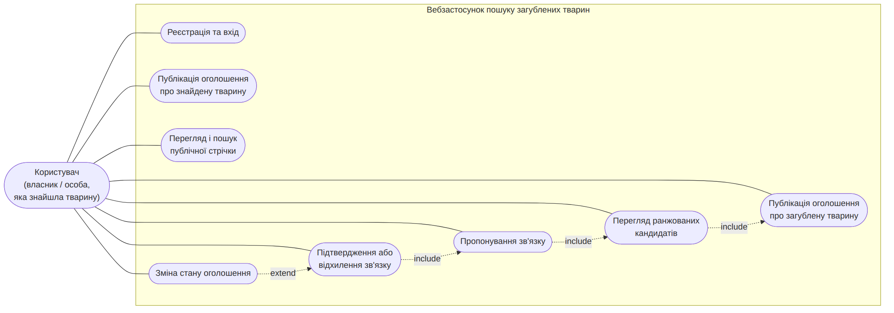

Тема роботи: Вебзастосунок для пошуку загублених домашніх тварин
Період практики: 2026-02-02 – 2026-02-27
Спеціальність: 121 Інженерія програмного забезпечення
Освітньо-професійна програма: Інженерія програмного забезпечення
Здобувач: Ілля ВЕРБАНОВ
Керівник практики від університету: Надія БЕГЛОВА, асистент каф. ІПЗ
Керівник практики від підприємства: Надія БЕГЛОВА, асистент каф. ІПЗ
Одеса – 2026
ЗМІСТ
ВСТУП3
ХАРАКТЕРИСТИКА ПІДПРИЄМСТВА5
1 СПЕЦИФІКАЦІЯ ВИМОГ ДО ВЕБЗАСТОСУНКУ6
1.1 Опис предметної області6
1.2 Аналіз аналогів6
1.3 Функціональні вимоги10
1.4 Варіанти використання системи10
1.5 Нефункціональні вимоги13
2 ПРОЄКТУВАННЯ ВЕБЗАСТОСУНКУ14
2.1 Архітектура вебзастосунку14
2.2 Проєктування структури бази даних15
2.3 Специфікації класів18
3 ПРОГРАМНА РЕАЛІЗАЦІЯ ВЕБЗАСТОСУНКУ20
3.1 Вибір інструментів розробки20
3.2 Реалізація сервісу зіставлення оголошень20
4 ТЕСТУВАННЯ ВЕБЗАСТОСУНКУ23
4.1 Тестування функціональних вимог23
4.2 Тестування нефункціональних вимог25
ВИСНОВКИ27
СПИСОК ВИКОРИСТАНИХ ДЖЕРЕЛ28
ВСТУП
Актуальність теми роботи. Втрата домашньої тварини є поширеною ситуацією, у якій вирішальне значення має час: чим довше тварина залишається ненайденою, тим менша ймовірність її повернення. За даними міжнародних досліджень, протягом життя власника втрачають близько 14–15 % собак і близько 15 % котів, а в межах першого тижня після зникнення додому повертається лише близько третини тварин. В умовах України ситуація додатково ускладнюється воєнним станом і вимушеною міграцією населення, через що кількість загублених тварин у великих містах істотно зросла. При цьому основними каналами пошуку залишаються неструктуровані дописи у соціальних мережах і на дошках оголошень, які не мають єдиної структури та не зіставляються між собою автоматично.
Власник, який втратив тварину, і людина, яка її знайшла, зазвичай діють розрізнено: оголошення розміщуються в різних каналах, мають довільну структуру, а їх зіставлення виконується вручну і залежить від випадкового перегляду стрічки. Це збільшує час пошуку і знижує шанси на возз'єднання тварини з власником. Практична цінність розробленого вебзастосунку полягає в заміні неструктурованого ручного пошуку на автоматичне геопросторове та видо-орієнтоване зіставлення оголошень, що дозволяє виявити ймовірний збіг у перші 24–72 години — найкритичніший проміжок часу для пошуку.
Мета і задачі роботи. Метою роботи є скорочення часу возз'єднання загублених домашніх тварин з власниками за рахунок автоматизації первинного зіставлення оголошень про втрату та про знахідку. Для досягнення поставленої мети необхідно вирішити такі задачі:
дослідити предметну область пошуку загублених домашніх тварин;
провести аналіз існуючих рішень і підходів;
сформувати функціональні та нефункціональні вимоги до системи;
розробити алгоритм зіставлення та ранжування оголошень-кандидатів;
спроєктувати архітектуру застосунку, структуру бази даних і специфікації класів;
реалізувати вебзастосунок із використанням сучасних технологій;
провести тестування функціональних і нефункціональних вимог системи.
Об'єкт роботи. Об'єктом роботи є процес пошуку та повернення загублених домашніх тварин на основі зіставлення оголошень про втрату та про знахідку.
Предмет роботи. Предметом роботи є моделі, алгоритм і програмні засоби вебзастосунку, що забезпечують структуроване подання оголошень і автоматичне формування ранжованого переліку ймовірних збігів із подальшим підтвердженням зв'язку людиною.
ХАРАКТЕРИСТИКА ПІДПРИЄМСТВА
Переддипломну практику пройдено на базі кафедри інженерії програмного забезпечення Навчально-наукового інституту комп'ютерних систем Національного університету «Одеська політехніка». Кафедра є випусковою за спеціальністю 121 «Інженерія програмного забезпечення» і забезпечує підготовку фахівців освітніх рівнів «бакалавр» і «магістр» за освітньо-професійною програмою «Інженерія програмного забезпечення».
Основними напрямами діяльності кафедри є освітня та науково-дослідна робота у сфері проєктування, розробки й супроводу програмного забезпечення. Кафедра здійснює викладання дисциплін з програмування, проєктування програмних систем, баз даних, вебтехнологій і тестування, а також керівництво курсовими та кваліфікаційними роботами здобувачів. Матеріально-технічне забезпечення включає комп'ютерні лабораторії із сучасним програмним інструментарієм, що дозволяє виконувати повний цикл розробки програмного продукту.
Практичну підготовку організовано з орієнтацією на самостійне виконання здобувачем індивідуального завдання під керівництвом наукового керівника. У межах практики застосовується структурований підхід до розробки програмного забезпечення, що охоплює аналіз предметної області, формування вимог, проєктування архітектури та бази даних, програмну реалізацію і тестування.
У межах проходження практики виконано індивідуальне завдання — розробку вебзастосунку для пошуку загублених домашніх тварин: проаналізовано предметну область і програмні аналоги, сформовано вимоги до системи, спроєктовано архітектуру та структуру бази даних, реалізовано основний функціонал і проведено його тестування.
1 СПЕЦИФІКАЦІЯ ВИМОГ ДО ВЕБЗАСТОСУНКУ
1.1 Опис предметної області
Втрата домашньої тварини зачіпає значну частину власників протягом життя тварини. Успіх повернення залежить від того, наскільки швидко інформація про втрату досягне людини, яка тварину знайшла, і навпаки. Дослідження практик повернення тварин показують, що більшість успішних випадків припадає на перші дні після зникнення та на невелику відстань від місця, де тварину востаннє бачили [1].
Сьогодні власник, який втратив тварину, найчастіше розміщує допис у місцевих групах соціальних мереж і на дошках оголошень, звертається до притулків і ветеринарних клінік. Людина, яка знайшла тварину, діє симетрично, але незалежно. Оголошення обох сторін потрапляють у різні канали, мають довільну структуру і не зіставляються між собою — збіг виявляється випадково. Така організація процесу має кілька недоліків: оголошення не структуровані, зіставлення виконується вручну, а контактні дані публікуються відкрито, що створює ризик зловживань ще до підтвердження збігу.
У наукових джерелах і практичних посібниках наголошується, що ключовими ознаками для зіставлення є вид тварини, географічна близькість місць події та невеликий проміжок часу між втратою і знахідкою [1, 2]. Саме ці ознаки піддаються формалізації та автоматичному порівнянню. Таким чином, процес пошуку загублених тварин потребує єдиної структурованої моделі оголошення та автоматичного зіставлення оголошень про втрату і про знахідку з подальшим підтвердженням збігу людиною.
1.2 Аналіз аналогів
Аналіз наявних рішень дозволяє виявити вдалі підходи до побудови систем пошуку загублених тварин, а також їхні недоліки. Особливу увагу приділено таким аспектам:
структурованості оголошення про тварину;
наявності автоматичного зіставлення оголошень про втрату та про знахідку;
урахуванню географічної відстані та дати події;
захисту контактних даних до підтвердження збігу;
зручності користувацького інтерфейсу.
Для порівняння обрано такі аналоги:
сервіс сповіщень про втрачених тварин PawBoost [3];
некомерційна база загублених і знайдених тварин Pet FBI [4];
тематичні спільноти в соціальних мережах і розділи дощок оголошень [5].
PawBoost — сервіс, що дозволяє опублікувати оголошення про втрачену або знайдену тварину та платно поширити його у вигляді сповіщень серед користувачів поблизу (рис. 1.1). Сервіс має структуровану форму оголошення та велику аудиторію, проте зіставлення втрати та знахідки не автоматизоване, розширене поширення є платним, а контактні дані відкриваються без підтвердження збігу.
Рисунок 1.1 – Інтерфейс публікації оголошення в сервісі PawBoost
Pet FBI — некомерційна база загублених і знайдених тварин із безкоштовною публікацією оголошень і пошуком за фільтрами (рис. 1.2). Перевагами є безкоштовність і некомерційна спрямованість, недоліками — зіставлення виконується користувачем вручну, відсутнє ранжування ймовірних збігів і немає механізму підтвердження зв'язку із приховуванням контактів.
Рисунок 1.2 – Результати пошуку в базі Pet FBI
Тематичні спільноти в соціальних мережах і розділи дощок оголошень використовуються найчастіше через нульовий поріг входу (рис. 1.3). Їх перевагами є локальна аудиторія та швидка публікація, недоліками — довільна структура оголошення, відсутнє автоматичне зіставлення і відкрита публікація контактних даних.
Рисунок 1.3 – Допис про загублену тварину в тематичній спільноті
Для наочного представлення результати порівняння аналогів за основними критеріями наведено в таблиці 1.1.
Таблиця 1.1 – Порівняння аналогів
Критерій
PawBoost
Pet FBI
Спільноти
Розроблений застосунок
Структурована модель оголошення
+
+
–
+
Автоматичне зіставлення втрати та знахідки
–
–
–
+
Урахування відстані та дати
частково
частково
–
+
Ранжування кандидатів
–
–
–
+
Підтвердження збігу людиною
–
–
–
+
Приховування контактів до підтвердження
–
–
–
+
Безкоштовність базових функцій
частково
+
+
+
Аналіз показує, що наявні рішення забезпечують публікацію оголошень, але не виконують автоматичного зіставлення втрати та знахідки, не ранжують ймовірні збіги і не приховують контактні дані до підтвердження. Це обґрунтовує доцільність розробки власної системи.
1.3 Функціональні вимоги
Функціональні вимоги визначають дії, які користувач може виконувати в системі. У розроблюваному вебзастосунку передбачається реалізація таких можливостей:
реєстрація користувача та вхід за електронною поштою і паролем;
публікація оголошення про загублену тварину із зазначенням виду, місця та дати події;
публікація оголошення про знайдену тварину з аналогічним набором ознак;
долучення фотографії до оголошення;
перегляд і пошук публічної стрічки оголошень із фільтрацією за видом, статусом, місцем і періодом;
перегляд переліку ранжованих оголошень-кандидатів для власного оголошення;
пропонування зв'язку між оголошенням про втрату та оголошенням про знахідку;
підтвердження або відхилення запропонованого зв'язку другою стороною;
взаємне розкриття контактних даних після підтвердження зв'язку;
зміна стану оголошення (тварину повернуто, оголошення закрито).
1.4 Варіанти використання системи
Варіанти використання описують основні сценарії взаємодії користувача з вебзастосунком. Основним актором є зареєстрований користувач, який виступає у відносній ролі власника (автор оголошення про втрату) або особи, яка знайшла тварину (автор оголошення про знахідку). Окремої ролі адміністратора в межах роботи не передбачено. Основні дії користувача та їх взаємозв'язок наведено на діаграмі варіантів використання (рис. 1.4), а послідовність роботи деталізовано у сценаріях 1.1–1.3.

Рисунок 1.4 – Діаграма варіантів використання системи
Сценарій 1.1 – Публікація оголошення про загублену тварину
Мета: опублікувати структуроване оголошення про загублену тварину. Основна діюча особа: користувач (власник). Область дії: вебзастосунок пошуку загублених тварин. Передумови: користувач автентифікований. Тригер: користувач обирає функцію «Повідомити про тварину». Основний успішний сценарій:
1. Користувач обирає тип оголошення «Загублено».
2. Система відображає форму оголошення.
3. Користувач вводить вид тварини, опис, місце та дату події.
4. Користувач за бажанням долучає фотографію.
5. Користувач вводить контактні дані та підтверджує публікацію.
6. Система перевіряє коректність введених даних.
7. Система зберігає оголошення зі станом «активне».
Розширення (альтернативні сценарії): 6а. Якщо обов'язкові поля не заповнені або дані некоректні, система виводить повідомлення про помилку і не зберігає оголошення. 4а. Якщо завантаження фотографії не вдалося, оголошення зберігається без фотографії, а користувача повідомляють про це.
Сценарій 1.2 – Перегляд кандидатів для оголошення
Мета: отримати перелік ймовірних збігів для власного оголошення. Основна діюча особа: користувач (автор оголошення). Область дії: вебзастосунок пошуку загублених тварин. Передумови: користувач автентифікований і є автором оголошення. Тригер: користувач відкриває сторінку кандидатів свого оголошення. Основний успішний сценарій:
1. Користувач відкриває власне оголошення та обирає функцію перегляду кандидатів.
2. Система перевіряє, що користувач є автором оголошення.
3. Система формує перелік оголошень протилежного типу.
4. Система обчислює для кожного оголошення відстань, збіг за видом і різницю дат.
5. Система впорядковує перелік за ступенем відповідності та відображає його.
Розширення (альтернативні сценарії): 2а. Якщо користувач не є автором оголошення, система відмовляє у доступі. 5а. Якщо відповідних оголошень немає, система повідомляє про відсутність кандидатів.
Сценарій 1.3 – Підтвердження зв'язку та розкриття контактів
Мета: підтвердити збіг і отримати контактні дані другої сторони. Основна діюча особа: користувач (друга сторона зв'язку). Область дії: вебзастосунок пошуку загублених тварин. Передумови: для пари оголошень запропоновано зв'язок; користувач є автором другого оголошення. Тригер: користувач відкриває запропонований зв'язок. Основний успішний сценарій:
1. Користувач переглядає перелік своїх зв'язків і обирає запропонований зв'язок.
2. Система перевіряє, що користувач не є ініціатором зв'язку.
3. Користувач підтверджує зв'язок.
4. Система переводить зв'язок у стан «підтверджено».
5. Система взаємно розкриває контактні дані обох оголошень.
Розширення (альтернативні сценарії): 2а. Якщо рішення намагається ухвалити ініціатор зв'язку, система відмовляє у доступі. 3а. Якщо користувач відхиляє зв'язок, система переводить його у стан «відхилено» і контакти не розкриває.
1.5 Нефункціональні вимоги
Нефункціональні вимоги визначають характеристики якості системи та умови її функціонування. До основних нефункціональних вимог належать:
продуктивність: формування переліку кандидатів для одного оголошення має виконуватися не більше ніж за 2 секунди за обсягу до десятків тисяч активних оголошень;
зручність використання: інтерфейс має бути зрозумілим, придатним для роботи з мобільного пристрою та мінімізувати кількість дій для публікації оголошення;
безпека: паролі зберігаються лише у вигляді геш-значень за алгоритмом argon2id; доступ до даних за замовчуванням заборонено; контактні дані не потрапляють у публічні подання;
надійність: некоректні вхідні дані відхиляються на межі системи з повідомленням про помилку; неприпустимі переходи стану оголошення блокуються;
масштабованість: архітектура має допускати заміну сховища файлів і додавання нових ознак зіставлення без суттєвої переробки наявного коду;
цілісність даних: пара «оголошення про втрату — оголошення про знахідку» не може мати більше одного зв'язку.
Висновки до розділу 1
У першому розділі виконано аналіз предметної області пошуку загублених домашніх тварин і показано, що наявні канали публікації оголошень розрізнені, оголошення не структуровані, а зіставлення втрати та знахідки виконується вручну. Проведено аналіз аналогів — сервісу PawBoost, бази Pet FBI та тематичних спільнот, який показав, що жодне з рішень не виконує автоматичного зіставлення оголошень, не ранжує ймовірні збіги і не приховує контактні дані до підтвердження. На основі аналізу сформовано функціональні та нефункціональні вимоги і визначено основні варіанти використання системи, що є підставою для проєктування в наступному розділі.
2 ПРОЄКТУВАННЯ ВЕБЗАСТОСУНКУ
2.1 Архітектура вебзастосунку
Систему побудовано як монорепозиторій із двома застосунками — клієнтським і серверним — та спільними правилами. Клієнтська частина є односторінковим вебзастосунком, серверна — застосунком прикладного програмного інтерфейсу. Клієнт і сервер взаємодіють через інтерфейс на основі протоколу HTTP з обміном даними у форматі JSON; передавання фотографій виконується окремим бінарним потоком. Загальну архітектуру наведено на рисунку 2.1.
Рисунок 2.1 – Загальна архітектура вебзастосунку
Серверну частину організовано за принципом портів та адаптерів із фіксованим контрактом шарів. Контролер розбирає запит за схемою валідації, викликає рівно один метод сервісу і повертає результат. Сервіс містить бізнес-логіку та авторизацію і залежить від інших модулів лише через порти, задані символьними токенами. Репозиторій виконує запити до бази даних лише в межах таблиць власного модуля. Адаптер інкапсулює доступ до зовнішньої системи за портом, що дозволяє замінити сховище без зміни бізнес-логіки.
Серверні модулі: модуль автентифікації (володіє таблицею користувачів), модуль оголошень (володіє таблицею оголошень, що об'єднує втрату і знахідку), модуль зв'язків, листовий модуль читання зв'язків, модуль файлового сховища та інфраструктурні модулі конфігурації, доступу до бази даних і спільного коду. Взаємну залежність модулів оголошень і зв'язків розв'язано винесенням спільного читання підтверджених зв'язків у листовий модуль, що усуває циклічну залежність.
Клієнтську частину організовано за модулями з обов'язковим публічним інтерфейсом за схемою «розумний хук — нерозумний компонент»: уся логіка стану зосереджена в хуках, а компоненти лише відображають дані. Доступ до серверу інкапсульовано в єдиному транспортному модулі, який додає токен до кожного запиту. Доступ до даних за замовчуванням заборонено: усі маршрути захищені глобальним фільтром автентифікації, а публічні маршрути позначаються явно.
2.2 Проєктування структури бази даних
База даних реалізована у системі керування базами даних PostgreSQL і складається з трьох таблиць: користувачі, оголошення та зв'язки. Структуру бази даних у вигляді діаграми «сутність — зв'язок» наведено на рисунку 2.2.
Рисунок 2.2 – Діаграма «сутність — зв'язок» бази даних
Структуру таблиці користувачів наведено в таблиці 2.1.
Структуру таблиці оголошень наведено в таблиці 2.2.
Таблиця 2.2 – Структура таблиці оголошень
Поле
Тип
Призначення
id
uuid
Первинний ключ оголошення
kind
text
Тип оголошення: втрата або знахідка
reporter_id
uuid
Зовнішній ключ на автора (користувачі)
status
text
Стан: активне, повернуто, вирішено, закрито
species
text
Вид тварини: собака, кіт, птах, інше
breed, name, color, description
text
Необов'язкові текстові ознаки
photo_key
text
Ключ фотографії у файловому сховищі
contact_phone, contact_email
text
Контактні дані (приховані у публічному поданні)
lat, lng
double precision
Координати місця події
event_date
timestamptz
Дата та час події
created_at, updated_at
timestamptz
Дата створення та оновлення запису
Структуру таблиці зв'язків наведено в таблиці 2.3.
Таблиця 2.3 – Структура таблиці зв'язків
Поле
Тип
Призначення
id
uuid
Первинний ключ зв'язку
lost_report_id
uuid
Зовнішній ключ на оголошення про втрату
found_report_id
uuid
Зовнішній ключ на оголошення про знахідку
proposed_by
uuid
Зовнішній ключ на користувача-ініціатора
status
text
Стан: запропоновано, підтверджено, відхилено
created_at
timestamptz
Дата та час створення зв'язку
resolved_at
timestamptz
Дата та час підтвердження або відхилення
Для таблиці зв'язків задано обмеження унікальності пари «оголошення про втрату — оголошення про знахідку», що гарантує не більше одного зв'язку для пари оголошень. Множинні значення (тип, стан, вид) зберігаються як текст і перевіряються переліком на межі застосунку, що спрощує подальше розширення набору значень.
2.3 Специфікації класів
Модель предметної області будується навколо трьох понять: користувач, оголошення та зв'язок. Користувач — це автентифікований обліковий запис; ролі «власник» і «особа, яка знайшла тварину» не зберігаються окремо, а визначаються відносно того, яке оголошення створив користувач. Оголошення про втрату і про знахідку мають однаковий набір ознак, тому подаються однією сутністю з ознакою-дискримінатором «тип». Зв'язок — це збережене, запропоноване людиною з'єднання рівно одного оголошення про втрату з рівно одним оголошенням про знахідку з життєвим циклом «запропоновано» → «підтверджено» або «відхилено». Специфікації основних класів наведено в таблиці 2.4.
Таблиця 2.4 – Специфікації основних класів предметної області
Клас
Відповідальність
Ключові операції
User
Обліковий запис користувача та його ідентичність
реєстрація, автентифікація, видача токена
Report
Оголошення про втрату або знахідку з ознаками зіставлення
створення, зміна стану, публічне і власницьке подання
Стан оголошення змінюється за визначеними правилами переходів: оголошення про втрату з активного стану може перейти у стан «повернуто» (лише за наявності підтвердженого зв'язку) або «закрито»; оголошення про знахідку — у стан «вирішено» або «закрито». Неприпустимі переходи блокуються на рівні сервісу.
Висновки до розділу 2
У другому розділі спроєктовано систему. Спроєктовано архітектуру вебзастосунку як монорепозиторій із клієнтською та серверною частинами; серверну частину організовано за принципом портів та адаптерів, клієнтську — за схемою «розумний хук — нерозумний компонент». Спроєктовано структуру бази даних із трьох таблиць із визначенням полів, типів і обмежень цілісності. Побудовано модель предметної області з трьох понять — користувач, оголошення, зв'язок — і визначено специфікації основних класів та правила переходів стану. Отримані проєктні рішення є основою програмної реалізації, описаної в наступному розділі.
3 ПРОГРАМНА РЕАЛІЗАЦІЯ ВЕБЗАСТОСУНКУ
3.1 Вибір інструментів розробки
Вибір інструментів зумовлений вимогами до продуктивності, безпеки та підтримуваності, а також рішенням про монорепозиторій із клієнтською та серверною частинами на спільній мові програмування. Мовою реалізації обох частин є TypeScript версії 5.6.
Серверну частину реалізовано на платформі Node.js [6] версії 22.11 LTS з використанням фреймворку NestJS [7] версії 11.0, який підтримує модульну структуру та впровадження залежностей, що відповідає обраній архітектурі портів та адаптерів. Доступ до бази даних виконано через ORM Drizzle [8] версії 0.44 з типобезпечними запитами; системою керування базами даних обрано PostgreSQL [9] версії 16.4. Валідацію вхідних даних виконано бібліотекою Zod [10] версії 3.23, обробку результатів операцій — бібліотекою neverthrow, що дозволяє повертати помилки як значення, а не винятки. Паролі гешуються алгоритмом argon2id, автентифікація реалізована через підписаний токен JSON Web Token [11]. Захист застосунку посилено типовими заголовками безпеки та обмеженням джерел запитів.
Клієнтську частину реалізовано бібліотекою React [12] версії 19.0 із системою збирання Vite та маршрутизацією React Router. Стилізацію виконано модулями CSS на основі єдиної системи візуальних токенів зі світлою та темною темами. Тестування реалізовано засобом Vitest; репозиторні тести серверної частини виконуються проти ефемерної бази даних PostgreSQL у контейнері засобами бібліотеки testcontainers, що забезпечує перевірку реальних запитів без імітації драйвера бази даних. Монорепозиторій керується пакетним менеджером pnpm і збирачем Turborepo, що дозволяє запускати єдиний конвеєр перевірки (перевірка типів, тести, збірка) для обох застосунків.
3.2 Реалізація сервісу зіставлення оголошень
Сервіс зіставлення реалізує автоматичне формування ранжованого переліку оголошень-кандидатів. Перелік обчислюється на запит і не зберігається. Сервіс перевіряє, що запит надходить від автора оголошення, після чого репозиторій формує вибірку оголошень протилежного типу з обчисленням показників відповідності безпосередньо засобами бази даних.
Географічна відстань між місцями подій обчислюється за формулою гаверсинуса [13] виразом мови SQL із параметрами, переданими через зв'язування; для уникнення похибки функції арккосинуса аргумент обмежується відрізком [−1, 1]. Різниця дат обчислюється відніманням значень дати події з переведенням у доби. Упорядкування виконується за лексикографічним правилом: спершу за збігом виду тварини за спаданням, далі за відстанню за зростанням, далі за різницею дат за зростанням. Спрощену реалізацію формування кандидатів наведено в лістингу 3.1.
Лістинг 3.1 – Спрощена реалізація формування переліку кандидатів
Підтвердження зв'язку реалізовано в окремому сервісі. Під час пропонування зв'язку перевіряється коректність пари (одне оголошення про втрату і одне про знахідку) та належність ініціатору одного з оголошень. Підтвердити або відхилити зв'язок може лише автор другого оголошення. Після підтвердження зв'язку контактні дані обох оголошень взаємно розкриваються, при цьому модуль зв'язків не звертається до таблиці оголошень безпосередньо, а отримує дані через порт модуля оголошень.
Висновки до розділу 3
У третьому розділі обґрунтовано вибір інструментів розробки: платформа Node.js, фреймворк NestJS, бібліотека React, ORM Drizzle, система керування базами даних PostgreSQL, бібліотеки валідації та оброблення помилок, монорепозиторій під керуванням pnpm і Turborepo. Описано програмну реалізацію сервісу зіставлення оголошень: обчислення відстані за формулою гаверсинуса, різниці дат і збігу за видом засобами бази даних та впорядкування за лексикографічним правилом. Описано реалізацію підтвердження зв'язку із взаємним розкриттям контактних даних і дотриманням меж модулів. Реалізована система підлягає тестуванню, що описано в наступному розділі.
4 ТЕСТУВАННЯ ВЕБЗАСТОСУНКУ
4.1 Тестування функціональних вимог
Метою функціонального тестування є перевірка відповідності реалізованої системи вимогам, сформованим у підрозділі 1.3. Тестування виконано автоматизованими тестами засобом Vitest. Репозиторні тести серверної частини виконуються проти ефемерної бази даних PostgreSQL у контейнері, тести сервісів використовують підставні реалізації портів, тести контролерів виконують реальні запити крізь увесь конвеєр оброблення, а тести клієнтської частини використовують імітацію мережевих запитів. Перелік основних перевірених функціональних сценаріїв і результати наведено в таблиці 4.1.
Таблиця 4.1 – Результати функціонального тестування
№
Сценарій
Очікуваний результат
Результат
1
Реєстрація з унікальною поштою
Створено обліковий запис, видано токен
Пройдено
2
Реєстрація з наявною поштою
Відмова з кодом «пошту зайнято»
Пройдено
3
Вхід із правильними даними
Видано токен і дані користувача
Пройдено
4
Вхід із неправильним паролем
Відмова з кодом «невірні дані»
Пройдено
5
Публікація оголошення про втрату
Оголошення збережено зі станом «активне»
Пройдено
6
Публікація з некоректними даними
Відмова з повідомленням про помилку
Пройдено
7
Перегляд публічної стрічки з фільтрами
Повернено сторінку без контактних даних
Пройдено
8
Перегляд кандидатів автором оголошення
Повернено ранжований перелік
Пройдено
9
Перегляд кандидатів не автором
Відмова у доступі
Пройдено
10
Пропонування зв'язку
Зв'язок створено у стані «запропоновано»
Пройдено
11
Підтвердження зв'язку другою стороною
Зв'язок підтверджено, контакти розкрито
Пройдено
12
Спроба ініціатора підтвердити зв'язок
Відмова у доступі
Пройдено
13
Перехід у стан «повернуто» без зв'язку
Відмова: неприпустимий перехід
Пройдено
14
Повторний зв'язок для тієї самої пари
Відмова: конфлікт унікальності
Пройдено
Загалом автоматизований набір серверної частини містить 130 тестів, клієнтської — 44 тести; усі тести проходять успішно. Єдиний конвеєр перевірки (перевірка типів, тести, збірка) для обох застосунків завершується без помилок.
4.2 Тестування нефункціональних вимог
Нефункціональне тестування перевіряє відповідність системи вимогам, сформованим у підрозділі 1.5.
Продуктивність. Формування переліку кандидатів виконується одним запитом до бази даних з обчисленням показників відповідності на боці бази даних, без завантаження всієї множини оголошень у пам'ять. За обсягу до десятків тисяч активних оголошень час формування переліку не перевищує заданого порога у 2 секунди.
Безпека. Паролі зберігаються лише у вигляді геш-значень за алгоритмом argon2id. Доступ до даних за замовчуванням заборонено, публічні маршрути позначені явно. Контактні дані відсутні в публічних поданнях і розкриваються лише після підтвердження зв'язку. Перевірено, що публічні подання оголошень не містять контактних полів, а спроби несанкціонованого доступу відхиляються з відповідним кодом.
Надійність. Некоректні вхідні дані відхиляються на межі системи з типізованим повідомленням про помилку. Неприпустимі переходи стану оголошення блокуються. Обмеження унікальності пари оголошень запобігає створенню повторних зв'язків навіть за одночасних запитів.
Зручність використання. Інтерфейс перевірено на придатність до роботи з мобільного пристрою; стан оголошення подається одночасно піктограмою, підписом і кольором, що забезпечує доступність для користувачів із порушеннями сприйняття кольору.
Висновки до розділу 4
У четвертому розділі виконано тестування вебзастосунку. Функціональне тестування підтвердило відповідність системи вимогам підрозділу 1.3: перевірено реєстрацію та вхід, публікацію оголошень, перегляд стрічки і кандидатів, пропонування та підтвердження зв'язку, правила переходів стану і обмеження цілісності. Автоматизований набір із 130 серверних і 44 клієнтських тестів проходить успішно. Нефункціональне тестування підтвердило відповідність вимогам підрозділу 1.5 за продуктивністю, безпекою, надійністю та зручністю використання. Результати тестування свідчать про коректність роботи системи та її готовність до експлуатації.
ВИСНОВКИ
Під час проходження переддипломної практики виконано індивідуальне завдання — розробку вебзастосунку для пошуку загублених домашніх тварин шляхом автоматизованого зіставлення оголошень про втрату та про знахідку.
Проведено аналіз предметної області, який показав, що наявні канали публікації оголошень розрізнені, оголошення не структуровані, а зіставлення втрати та знахідки виконується вручну. Аналіз аналогів — сервісу PawBoost, бази Pet FBI та тематичних спільнот — показав, що жодне з рішень не виконує автоматичного зіставлення, не ранжує ймовірні збіги і не приховує контактні дані до підтвердження. На цій основі сформовано функціональні та нефункціональні вимоги і визначено варіанти використання системи.
Спроєктовано архітектуру вебзастосунку за принципом портів та адаптерів, структуру бази даних із трьох таблиць і специфікації основних класів предметної області. На основі проєктних рішень реалізовано вебзастосунок із використанням платформи Node.js, фреймворку NestJS, бібліотеки React, ORM Drizzle та системи керування базами даних PostgreSQL. Реалізовано сервіс зіставлення оголошень з обчисленням географічної відстані, збігу за видом і різниці дат, а також приховування контактних даних у публічних поданнях із взаємним розкриттям лише після підтвердження зв'язку.
Проведене функціональне та нефункціональне тестування підтвердило відповідність системи поставленим вимогам: автоматизований набір із 130 серверних і 44 клієнтських тестів проходить успішно, єдиний конвеєр перевірки завершується без помилок.
Таким чином, поставлені на практику задачі виконано повністю, а мету — скорочення часу возз'єднання загублених тварин з власниками за рахунок автоматизації зіставлення оголошень — досягнуто. Розроблений вебзастосунок може бути використаний волонтерськими спільнотами та притулками.
СПИСОК ВИКОРИСТАНИХ ДЖЕРЕЛ
1. Weiss E., Slater M., Lord L. Frequency of Lost Dogs and Cats in the United States and the Methods Used to Locate Them. Animals. 2012. Vol. 2, No. 2. P. 301–315. https://doi.org/10.3390/ani2020301 (дата звернення: 03.02.2026).
2. Lord L. K., Wittum T. E., Ferketich A. K., Funk J. A., Rajala-Schultz P. J. Search methods that people use to find owners of lost pets. Journal of the American Veterinary Medical Association. 2007. Vol. 230, No. 12. P. 1835–1840. https://doi.org/10.2460/javma.230.12.1835 (дата звернення: 03.02.2026).
3. PawBoost: Lost & Found Pets. URL: https://www.pawboost.com (дата звернення: 05.02.2026).
4. Pet FBI: Lost and Found Pets Database. URL: https://petfbi.org (дата звернення: 05.02.2026).
5. OLX. Розділ оголошень про загублених і знайдених тварин. URL: https://www.olx.ua (дата звернення: 05.02.2026).
9. PostgreSQL Global Development Group. PostgreSQL Documentation. URL: https://www.postgresql.org/docs/ (дата звернення: 28.02.2026).
10. Colin McDonnell. Zod Documentation. URL: https://zod.dev (дата звернення: 10.03.2026).
11. Jones M., Bradley J., Sakimura N. JSON Web Token (JWT) : RFC 7519. Internet Engineering Task Force, 2015. URL: https://www.rfc-editor.org/rfc/rfc7519 (дата звернення: 10.03.2026).
12. Meta Open Source. React Documentation. URL: https://react.dev (дата звернення: 23.03.2026).
13. Sinnott R. W. Virtues of the Haversine. Sky and Telescope. 1984. Vol. 68, No. 2. P. 159.